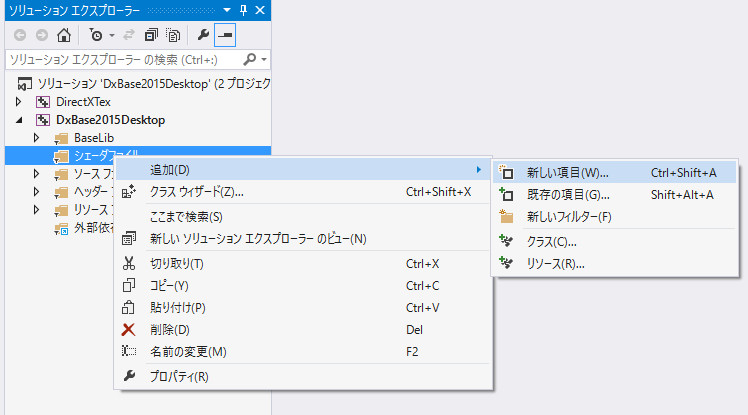
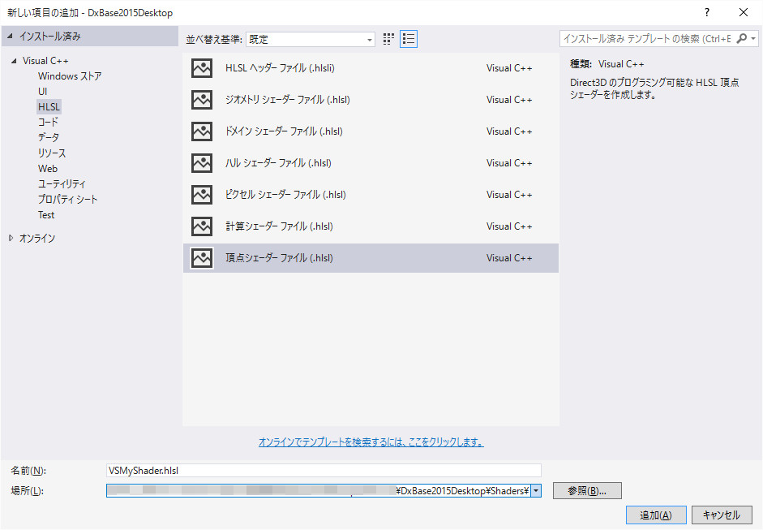
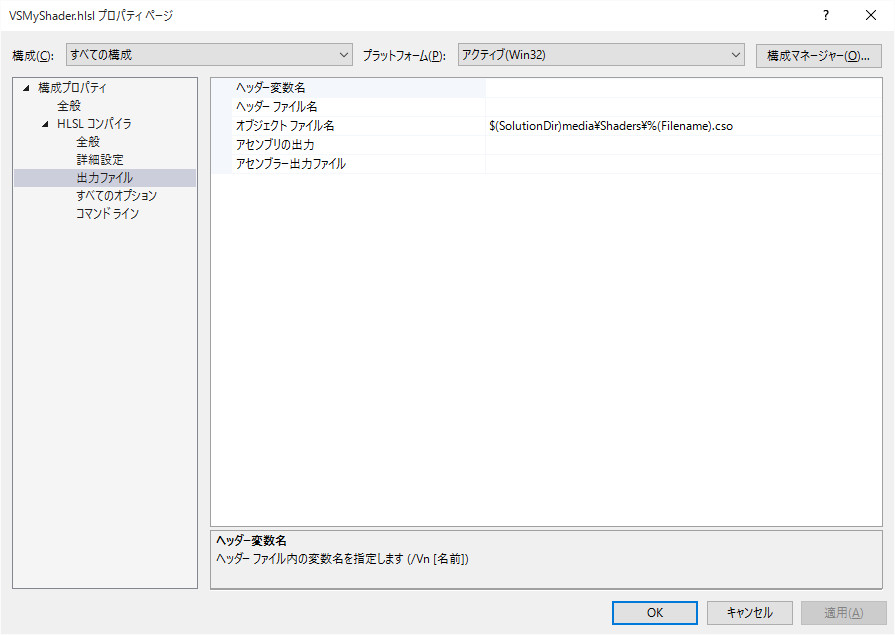
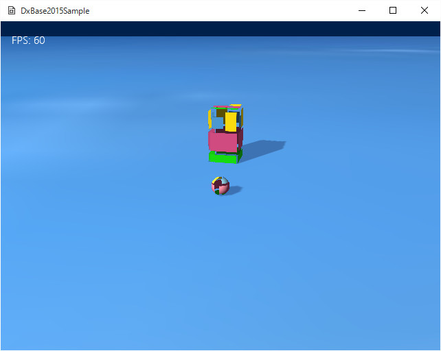
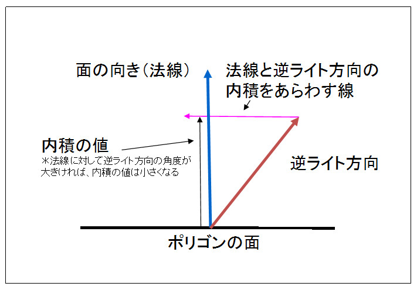

図4002a
そのあと、以下のようにHSLS、頂点シェーダを選択してファイル名を設定します。ここではファイル名を、たとえばVSMyShader.hsls、保存するディレクトリをDxBase2015Deskyop\Shaders\に設定します。（Shadersディレクトリは別途作成します）。DxBase2015Deskyop直下でも問題はありませんが、C++ファイルとシェーダファイルを分けた方がいいと思います。

図4002b
作成すると、mainという関数が自動的にできています。VSMyShader.hlslのプロパティを確認して、ちゃんとmedia/Shadersディレクトリにcsoファイルがビルドされるようになってるか確認します。

図4002c
注意点は出力ファイルのオブジェクトファイル名が$(SolutionDir)media\Shaders\%(Filename).csoになっているかどうか、です。

図4002d
この奥の方で回転するボックスが、今回独自のシェーダで描画しているオブジェクトです。
cbuffer SimpleConstantBuffer : register(b0)
{
float4x4 World : packoffset(c0);
float4x4 View : packoffset(c4);
float4x4 Projection : packoffset(c8);
float4 LightDir : packoffset(c12);
float4 Param : packoffset(c13);
};
struct VertexShaderInput
{
float4 pos : SV_Position;
float3 norm : NORMAL;
float2 tex : TEXCOORD0;
};
struct PixelShaderInput
{
float4 pos : SV_POSITION;
float3 norm : NORMAL;
float2 tex : TEXCOORD0;
};
cbuffer SimpleConstantBuffer :register(b0) {
cbuffer SimpleConstantBuffer : register(b0)
{
float4x4 World : packoffset(c0);
float4x4 View : packoffset(c4);
//中略
};
struct VertexShaderInput
{
float4 pos : SV_Position;
float3 norm : NORMAL;
float2 tex : TEXCOORD0;
};
float4 pos : SV_Position;
#include "SimpleInc.hlsli"
PixelShaderInput main(VertexShaderInput input)
{
//ピクセルシェーダーに渡す変数
PixelShaderInput vertexShaderOutput;
//頂点の位置を変換
float4 pos = float4(input.pos.xyz, 1.0f);
//ワールド変換
pos = mul(pos, World);
//ビュー変換
pos = mul(pos, View);
//射影変換
pos = mul(pos, Projection);
//ピクセルシェーダに渡す変数に設定
vertexShaderOutput.pos = pos;
//テクスチャのUV値を設定
vertexShaderOutput.tex = input.tex;
//ライティング用に法線をワールド変換して設定
vertexShaderOutput.norm = mul(input.norm, (float3x3)World);
//ピクセルシェーダに出力
//returnはピクセルシェーダに渡すことを意味する
return vertexShaderOutput;
}
struct PixelShaderInput
{
float4 pos : SV_POSITION;
float3 norm : NORMAL;
float2 tex : TEXCOORD0;
};
//頂点の位置を変換
float4 pos = float4(input.pos.xyz, 1.0f);
//ワールド変換
pos = mul(pos, World);
//ビュー変換
pos = mul(pos, View);
//射影変換
pos = mul(pos, Projection);
//ピクセルシェーダに渡す変数に設定
vertexShaderOutput.pos = pos;
//テクスチャのUV値を設定
vertexShaderOutput.tex = input.tex;
//ライティング用に法線をワールド変換して設定
vertexShaderOutput.norm = mul(input.norm, (float3x3)World);
//ピクセルシェーダに出力
//returnはピクセルシェーダに渡すことを意味する
return vertexShaderOutput;
#include "SimpleInc.hlsli"
Texture2D SimpleTexture : register(t0);
SamplerState SimpleSampler : register(s0);
float4 main(PixelShaderInput input) : SV_TARGET
{
//ライトの向きを得る
float3 LightDirection = -normalize(float3(LightDir.xyz));
float3 InputNormal = normalize(input.norm);
//ライトによるピクセルの色を決定
float4 LightColor = saturate(dot(InputNormal, LightDirection)
+ float4(0.7, 0.7, 0.7, 1.0));
//ライトの透明処理はなし
LightColor.a = 1;
//テクスチャによるピクセルの色を決定
float4 TexCol = SimpleTexture.Sample(SimpleSampler, input.tex);
//テクスチャ色とライト色を合成
return TexCol * LightColor;
}
Texture2D SimpleTexture : register(t0); SamplerState SimpleSampler : register(s0);
//ライトの向きを得る
float3 LightDirection = -normalize(float3(LightDir.xyz));
float3 InputNormal = normalize(input.norm);
//ライトによるピクセルの色を決定
float4 LightColor = saturate(dot(InputNormal, LightDirection)
+ float4(0.7, 0.7, 0.7, 1.0));
//ライトの透明処理はなし
LightColor.a = 1;

図4002e
ライトの逆向きと面の法線を内積をとっていますが、これは、上図の内積の値を計算することです。つまり、面の法制に対して、ライトの角度が大きければ、内積の値は小さくなります。
//テクスチャによるピクセルの色を決定
float4 TexCol = SimpleTexture.Sample(SimpleSampler, input.tex);
//テクスチャ色とライト色を合成
return TexCol * LightColor;
class CustomDrawBox : public GameObject{
//中略
//コンスタントバッファ構造体
struct ConstantBuffer
{
Matrix4X4 World;
Matrix4X4 View;
Matrix4X4 Projection;
Vector4 LightDir;
Vector4 Param; //汎用パラメータ
};
//コンスタントバッファ
shared_ptr<CBuffer<ConstantBuffer>> m_ConstantBuffer;
//頂点シェーダ
shared_ptr<VShader<VertexPositionNormalTexture>> m_VirtexShader;
//ピクセルシェーダー
shared_ptr<PShader> m_PixelShader;
public:
//中略
//初期化
virtual void Create() override;
virtual void Update() override;
virtual void Draw() override;
};
void CustomDrawBox::Create(){
//中略
//シェーダの作成
//コンスタントバッファ
m_ConstantBuffer = make_shared<CBuffer<ConstantBuffer>>();
//頂点シェーダ
m_VirtexShader = make_shared<VShader<VertexPositionNormalTexture>>(
App::GetApp()->m_wstrRelativeShadersPath + L"VSSimpleBase.cso"
);
//ピクセルシェーダー
m_PixelShader = make_shared<PShader>(
App::GetApp()->m_wstrRelativeShadersPath + L"PSSimpleBase.cso"
);
//影をつける（シャドウマップを描画する）
auto ShadowPtr = AddComponent<Shadowmap>();
//影の形（メッシュ）を設定
ShadowPtr->SetMeshResource(L"DEFAULT_CUBE");
//透明処理（描画順制御のため）
SetAlphaActive(true);
}
void CustomDrawBox::Draw(){
//デバイスの取得
auto Dev = App::GetApp()->GetDeviceResources();
auto pDx11Device = Dev->GetD3DDevice();
auto pID3D11DeviceContext = Dev->GetD3DDeviceContext();
//ステータスのポインタ
auto RenderStatePtr = GetStage()->GetRenderState();
auto PtrT = GetComponent<Transform>();
//ステージからカメラを取り出す
auto PtrCamera = GetStage()->GetTargetCamera();
//カメラの取得
Matrix4X4 View, Proj, WorldViewProj;
View = PtrCamera->GetViewMatrix();
Proj = PtrCamera->GetProjMatrix();
//コンスタントバッファの設定
ConstantBuffer cb1;
ZeroMemory(&cb1, sizeof(cb1));
//行列の設定(転置する)
cb1.World = Matrix4X4EX::Transpose(PtrT->GetWorldMatrix());;
cb1.View = Matrix4X4EX::Transpose(View);
cb1.Projection = Matrix4X4EX::Transpose(Proj);
//ライトの設定
//ステージから0番目のライトを取り出す
auto PtrLight = GetStage()->GetTargetLight(0);
cb1.LightDir = PtrLight->GetDirectional();
cb1.LightDir.w = 1.0f;
//コンスタントバッファの更新
pID3D11DeviceContext->UpdateSubresource(
m_ConstantBuffer->GetBuffer(), 0, nullptr, &cb1, 0, 0);
//ストライドとオフセット
UINT stride = sizeof(VertexPositionNormalTexture);
UINT offset = 0;
//頂点バッファの設定
auto PtrMeshResource = App::GetApp()->GetResource<MeshResource>(L"DEFAULT_CUBE");
pID3D11DeviceContext->IASetVertexBuffers(
0, 1, PtrMeshResource->GetVertexBuffer().GetAddressOf(), &stride, &offset);
//インデックスバッファのセット
pID3D11DeviceContext->IASetIndexBuffer(
PtrMeshResource->GetIndexBuffer().Get(), DXGI_FORMAT_R16_UINT, 0);
//描画方法（3角形）
pID3D11DeviceContext->IASetPrimitiveTopology(D3D11_PRIMITIVE_TOPOLOGY_TRIANGLELIST);
//ステータスのポインタ
//テクスチャを取得
ID3D11ShaderResourceView* pNull[1] = { 0 };
ID3D11SamplerState* pNullSR[1] = { 0 };
//テクスチャを設定
auto PtrTextureResource = App::GetApp()->GetResource<TextureResource>(L"TRACE_TX");
pID3D11DeviceContext->PSSetShaderResources(
0, 1, PtrTextureResource->GetShaderResourceView().GetAddressOf());
//リニアサンプラーを設定
ID3D11SamplerState* samplerState = RenderStatePtr->GetLinearClamp();
pID3D11DeviceContext->PSSetSamplers(0, 1, &samplerState);
//半透明処理
pID3D11DeviceContext->OMSetBlendState(
RenderStatePtr->GetAlphaBlendEx(), nullptr, 0xffffffff);
//デプスステンシルは使用する
pID3D11DeviceContext->OMSetDepthStencilState(RenderStatePtr->GetDepthDefault(), 0);
//シェーダの設定
pID3D11DeviceContext->VSSetShader(m_VirtexShader->GetShader(), nullptr, 0);
pID3D11DeviceContext->PSSetShader(m_PixelShader->GetShader(), nullptr, 0);
//インプットレイアウトの設定
pID3D11DeviceContext->IASetInputLayout(m_VirtexShader->GetInputLayout());
//コンスタントバッファの設定
ID3D11Buffer* pConstantBuffer = m_ConstantBuffer->GetBuffer();
pID3D11DeviceContext->VSSetConstantBuffers(0, 1, &pConstantBuffer);
pID3D11DeviceContext->PSSetConstantBuffers(0, 1, &pConstantBuffer);
//レンダリングステート
pID3D11DeviceContext->RSSetState(RenderStatePtr->GetCullFront());
//描画
pID3D11DeviceContext->DrawIndexed(PtrMeshResource->GetNumIndicis(), 0, 0);
//レンダリングステート
pID3D11DeviceContext->RSSetState(RenderStatePtr->GetCullBack());
//描画
pID3D11DeviceContext->DrawIndexed(PtrMeshResource->GetNumIndicis(), 0, 0);
//後始末
Dev->InitializeStates(RenderStatePtr);
}
＊コンスタントバッファに、ワールド行列、ビュー行列、射影行列を渡す。 ＊コンスタントバッファにライト方向を渡す。 ＊コンスタントバッファの更新 ＊コンスタントバッファの設定 ＊頂点シェーダの設定 ＊ピクセルシェーダの設定 ＊頂点バッファの設定 ＊描画方法（3角形）の設定 ＊インデックスバッファの設定 ＊テクスチャの設定 ＊サンプラーステートの設定 ＊ブレンドステートの設定 ＊デプスステンシルステートの設定 ＊レンダリングステートの設定 ＊描画命令 ＊後始末